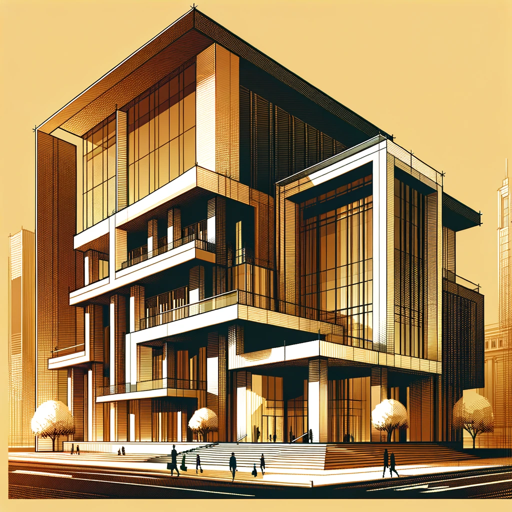

Áreas de Práctica
Arbitraje
José Antonio Abarca Moraga es Juez Arbitro nombrado por la Ilustrísima Corte de Apelaciones desde el año 2017, por lo que recibe causas de partición desde los Tribunales Civiles de Santiago.
Abarca Zañartu tramita además otros procedimientos arbitrales, destacando el procedimiento simplificado de división de herencia.
Civil
- Juicios de partición
- Compra venta de inmuebles
- Estudios de título
- Cobranza
- Juicios de arrendamiento
- Procedimientos civiles varios
- Regularización de la pequeña propiedad raíz
Familia
- Divorcios
- Tutela, Cuidado Personal y Visitas de menores
- Pensión Alimenticia
Ambiental
- Obtención de Permisos Ambientales
- Obtención de Permisos Sectoriales
- Demanda de Daño Ambiental
- Procedimientos Sancionatorios
Laboral
- Asesoría a empresas
- Demanda de Despido Injustificado
- Demanda de Cobro de Finiquito
- Demanda por Vulneración de Derechos
Corporativo
- Creación y modificación de sociedades
- Contratos

Penal
- Tramitación de Querella
- Defensa temprana del imputado